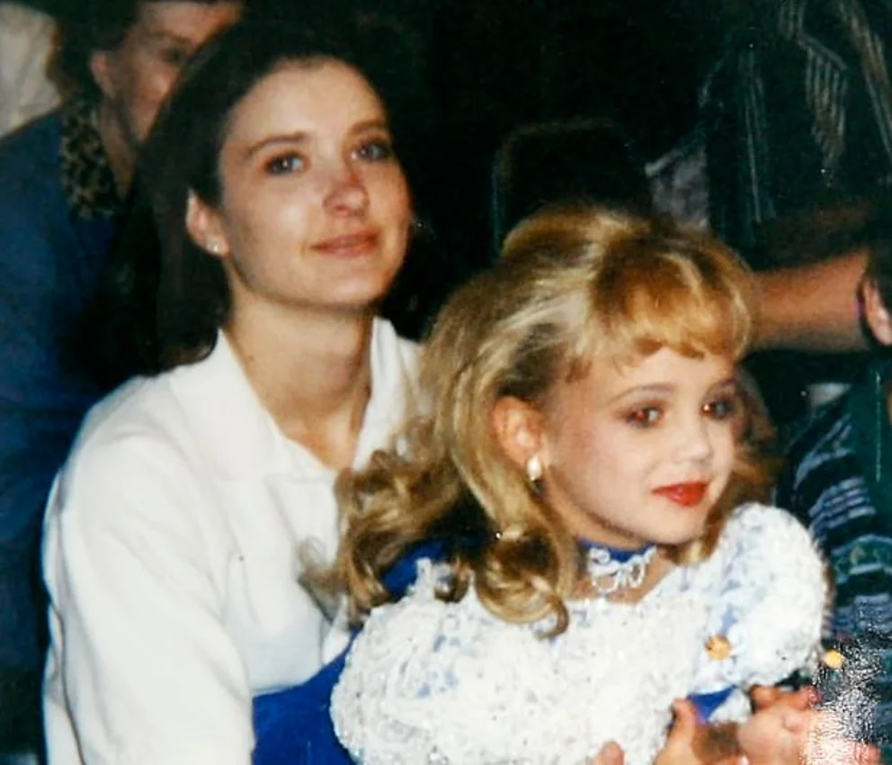
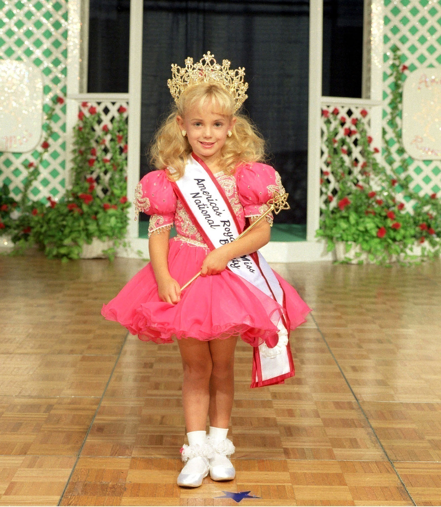
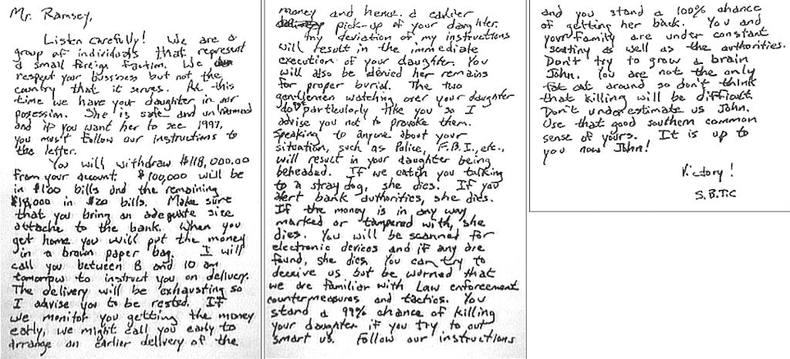
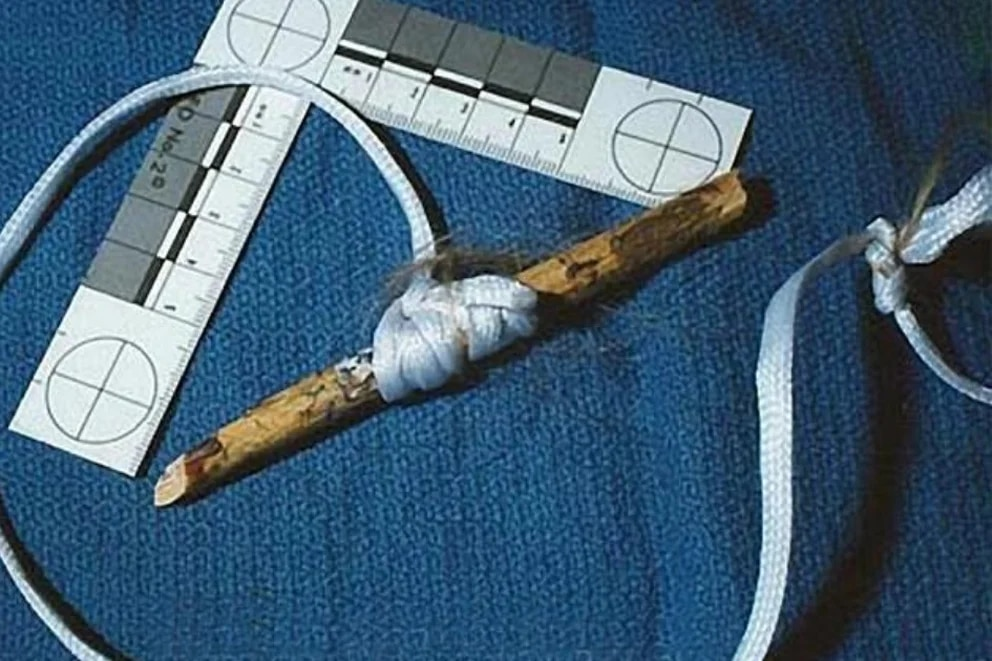
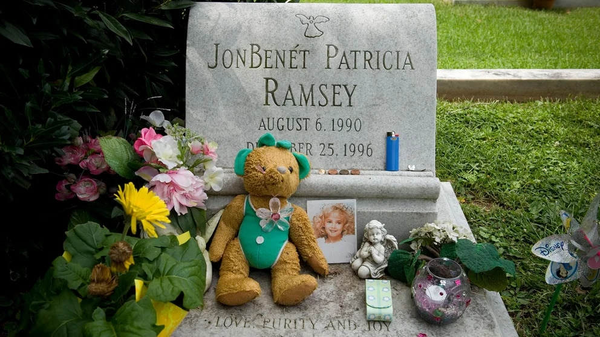
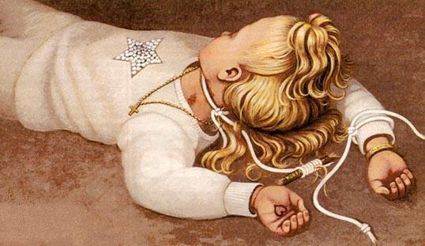
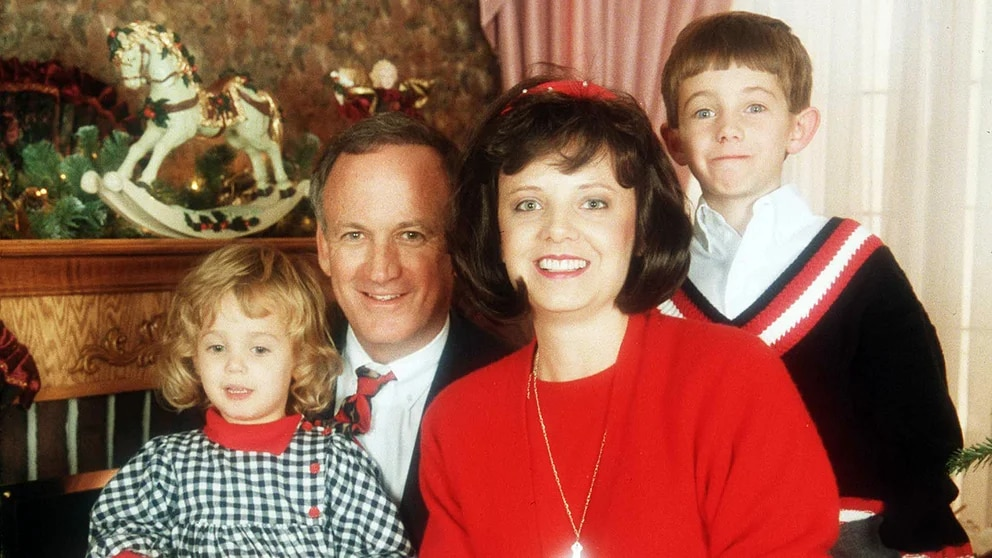

Cuando se tiene todo lo material para ser feliz, al resto de los mortales nos cuesta creer que un siniestro crimen pueda colarse en una casa familiar de dos millones dólares, donde viven un ejecutivo próspero y pintón con su impecable mujer y sus dos pequeños hijos. Pero sí. El horror sucede aún dónde todo promete la vida perfecta.
JonBenét tenía 6 años esa noche de Navidad de 1996 cuando se le terminó el hilo de la vida. Y aún hoy, 23 años después, poco se sabe de los motivos que condujeron a su vil asesinato.
Antes de Navidad
JonBenét Ramsey nació en Georgia, Atlanta, el 6 de agosto de 1990. Su nombre fue decidido combinando los dos de su padre: John Bennett.
John Bennett Ramsey y Patricia “Patsy” Ann Paugh (su segunda mujer y madre de dos de sus 5 hijos) se mudaron a Boulder, Colorado, cuando la pequeña tenía solo un año. Él era, al momento del crimen de su hija, un importante ejecutivo de negocios, presidente de Access Graphics, una compañía de servicios informáticos. No era un hombre de suerte en lo personal: cuatro años antes había sufrido otra tragedia, la muerte de la mayor de sus hijas, Elizabeth, en un accidente de tránsito.
Patsy era ama de casa, pero en su juventud había sido reina de belleza y había obtenido el título de Miss Virginia Occidental, en 1977. Quizá por eso, se dedicaba con obsesión a llevar a JonBenét a cuanto concurso hubiera. En muchos de ellos, Patsy era sponsor.

JonBénet junto a su madre en una de los tantos concursos de belleza donde la mujer llevó a su hija.
JonBenét, una verdadera mini beauty de largo pelo dorado y ojos azules, con sólo 6 años ya había aprendido a posar, imitando a las modelos y actrices adultas. Llevaba, en esas numerosas ocasiones, las uñas pintadas de rojo, los labios estridentes, sombra, máscara de pestañas, tacos, plumas y minis. No faltó gente que cuestionara, por lo bajo, esta conducta de Patsy. Su hija se había convertido en una muñeca de carne y hueso para perseguir sus caprichos.
JonBenét ganó muchos títulos para su cortísima vida: America's Royal Miss, Colorado State All-Star Kids Cover Girl, Little Miss Charlevoix Michigan, Little Miss Colorado, Little Miss Merry Christmas, Little Miss Sunburst y National Tiny Miss Beauty.
Demasiados premios, demasiada exposición, demasiada frivolidad para una infancia normal.

¡Feliz Navidad!
El miércoles 25 de diciembre de 1996, la familia Ramsey cenó temprano con un matrimonio amigo, Philipe y Priscila White. A las nueve y media de la noche ya habían vuelto a su casa.
El jueves 26 de diciembre de 1996, antes de las seis de la mañana Patsy bajó las escaleras desde su master suite. Al pie del segundo tramo, encontró una carta de tres carillas escrita a mano. Era un pedido de rescate. En ella exigían 118.000 dólares (una suma demasiado parecida, vería después la policía, al bono que había recibido su marido un tiempo antes) para devolverles a su hija.
JonBenét ya no estaba en su cuarto.

Traducción:
“Sr. Ramsey: ¡Escuche cuidadosamente!. Somos unos individuos que representamos a un pequeño grupo de residentes extranjeros. Respetamos sus negocios, pero no el país donde los desarrolla. En este momento tenemos a su hija. Ella está sana y salva, y si usted desea que esté viva en 1997, debe seguir nuestras instrucciones al pie de la letra.
Usted retirará $118.000 de su cuenta. $100.000 serán en billetes de $100 y los $18.000 restantes en billetes de $20. Asegúrese de llevar un maletín del tamaño adecuado al banco.
Cuando llegue a casa, pondrá el dinero en una bolsa de papel café. Lo llamaré mañana, entre las 8 y las 10 de la mañana, para informarle sobre la entrega del dinero. La entrega será exhaustiva, así que le recomiendo que descanse. Si vemos que recoge el dinero temprano, podríamos llamarlo luego para arreglar una entrega anticipada del maletín, liberando tempranamente a su hija.
Cualquier desobediencia a mis instrucciones traerá como consecuencia la ejecución inmediata de su hija. Tampoco le serán entregados sus restos para darle un funeral apropiado. Le aconsejo que no provoque a los dos señores que guardan a su hija, pues usted no es de su gusto particularmente.
Si le cuenta a alguien sobre su situación, ya sea a la policía o el FBI, traerá como consecuencia la decapitación de su hija. Si lo vemos hablando con un sabueso, ella muere. Si le alerta a las autoridades del banco, ella muere. Si el dinero está falsificado o intervenido de cualquier modo, ella muere. Puede intentar engañarnos, pero tenga en cuenta que nos son familiares las contramedidas y tácticas de la aplicación de la ley.
Usted tiene un 99% de posibilidades de matar a su hija si trata de ser más astuto que nosotros. Siga las instrucciones y tendrá un 100% de posibilidades de tenerla de vuelta. Usted y su familia están bajo vigilancia constante, al igual que las autoridades.
No intente idear un plan, John. Usted no es el único codicioso merodeando, así que no crea que matar sea muy difícil. No nos subestime, John. Use ese buen sentido común de ustedes los sureños. ¡Todo depende de usted, John!
¡Victoria!”
Despertó a su marido y llamaron a la policía, desobedeciendo las específicas instrucciones que los supuestos captores habían dado en la carta. Poco rato después, la detective de Boulder, Linda Arndt, le pidió a John Ramsey (53 años por ese entonces) que registrara a fondo la casa en busca de “algo inusual”.
El padre comenzó una búsqueda minuciosa con su amigo Fleet White. En una habitación de concreto, al fondo del sótano, ocho horas después de “haberse dado cuenta” de su desaparición, encontraron el cuerpo de JonBenét. Estaba cubierto por una sábana blanca.
John quitó la cinta adhesiva que cubría la boca de su hija e intentó desatar la cuerda que tenía amarrada.

El lazo con que asesinaron a la pequeña y fue hallado en el sótano.
Después de Navidad
La autopsia revelaría el mecanismo del asesinato. Las pericias dijeron que la muerte de JonBenét había sido por estrangulamiento, asociado con trauma craneocerebral. El estrangulamiento se había producido con un garrote, que había sido confeccionado con una correa de nailon y el mango de una brocha. Su cráneo tenía una fisura de poco más de 20 cm de longitud, como consecuencia de varios golpes.
La supuesta confirmación de que había sido abusada sexualmente, se descartó: el ADN encontrado en su ropa interior diría, mucho tiempo después, que era de las personas que empacan la ropa en las fábricas.
Lo único cierto es que se había ejercido, sobre la pequeña, mucha violencia y que las connotaciones sexuales eran evidentes.
Pero no había, ni habría, ninguna certeza sobre quién o quiénes lo habían hecho.

La noche en que JonBenét desapareció nadie más que sus padres y su hermano se encontraban en la casa. A pesar de que el padre de la niña comentó a la detective Arndt que estaba seguro de que todas las puertas estaban cerradas, una de las puertas fue encontrada abierta de par en par. En otra de las habitaciones, una ventana tenía el vidrio roto, cosa que no representó una prueba concluyente de que alguien hubiese entrado pues John Ramsey afirmó que era posible que él mismo lo hubiera roto, accidentalmente, meses antes. Además, en la ventana se descubrió una telaraña intacta. Era imposible que alguien hubiese entrado por allí sin romperla.
Con el correr de los días se fueron sumando otras sospechas. Por ejemplo, que la carta hubiese sido escrita por la mismísima madre, Patsy. De hecho, la experta en caligrafía Cina Wong, que examinó la nota, encontró más de 200 similitudes con la letra de Patsy Ramsay. Wong nunca se desdijo y lo siguió afirmando en distintas entrevistas a lo largo de los años: la letra era de Patsy.
La escena navideña
El escenario del crimen era, por lo menos, impactante: una mansión de más de 1000 metros cuadrados cubiertos, construida en 1927, de techos alpinos, ladrillo a vista, que constaba de cuatro plantas e impecable jardín. La casa tenía 9 puertas que daban al exterior y 104 ventanas, de las cuales 100, también daban afuera. Había mucho para investigar. Demasiado. Y muchos interesados, con dinero, en que nada se sepa.
Las pistas eran varias. Entre ellas había:
- Una ligadura blanca y sintética (soga o cuerda) atada alrededor de su cuello y, otra, flojamente anudada a su muñeca derecha, sobre la manga de su camiseta.
- La cuerda estaba enrollada en una barra de madera de diez centímetros, con la palabra «Korea» impresa con tinta dorada. La policía creyó que la barra fue usada para apretar la cuerda alrededor del cuello.
- Cinta adhesiva tapaba su boca. Una fibra pegada en la cinta adhesiva que tenía el cuerpo, era compatible con la ropa de Patsy.
- Su cabeza estaba girada hacia la derecha y sus brazos estaban extendidos sobre su cabeza.
- Tenía puesta una camiseta blanca de manga larga sin cuello, con una estrella plateada al centro decorada con lentejuelas; ropa interior blanca.
- Se encontraron manchas de orina en su bombacha.
- En la palma de su mano izquierda se encontró un dibujo de corazón hecho con tinta roja; en la derecha llevaba un anillo en el dedo medio.
- La nota de rescate de 3 hojas estaba escrita en un papel similar al que luego se halló en la casa, la suma coincidía con el dinero cobrado por John y la letra parecía la de Patsy.

Recreación de un artista de la autopsia de JonBenét.
Los investigadores, casi inmediatamente, se enfocaron en la familia. Incluido su hermano Burke, entonces de 9 años. Eran los principales sospechosos ante la falta de evidencia de que alguien hubiese entrado.
La contratación, por parte de la familia, de dos abogados criminalistas, un investigador privado y el experto en relaciones públicas, Pat Korten, contribuyeron a generar más sospechas sobre ellos. Estaban demasiado a la defensiva.

JonBenét Ramsey junto a su familia.
También hubo trascendidos según los cuales, luego de la llamada al 911 (Patsy dijo haber estado sola), habría colgado mal el teléfono permitiendo que se escucharan otras voces. Según los mismos trascendidos, la voz de un hombre (que podría ser John) decía: “No vamos a hablar más contigo”; luego otra voz decía: “Ayúdame Jesús” o “¿Qué hiciste? Ayúdame Jesús”; y, luego, una voz suave como de un niño (podría ser Burke), que agregaba: “¿qué encontraron?”.
Sin embargo, el tape fue analizado 9 veces, por el FBI y por el Servicio Secreto de los Estados Unidos. Y no reportaron ninguna otra voz más que la de la operadora y la de Patsy Ramsey.
Su hermano Burke, siempre había vivido a la sombra de su bella y “famosa” hermana. Las especulaciones llevaron a que los investigadores se preguntaran si no habría estado enojado y resentido. Tímido, introvertido y con tan pocos años, Burke no parecía ser el asesino que buscaban. Además, la familia aseguró que los hermanos tenían muy buena relación.
Pero, siempre hay peros, salió a la luz que en el verano de 1994, Burke había golpeado a JonBenét con un palo de golf en el rostro mientras jugaba a batear. Accidentalmente, dijeron. La mejilla izquierda de JonBenét tuvo que ser reconstruida por un cirujano plástico. En otra ocasión, Burke tiró sus propias heces sobre la cama de JonBenét. A esto se le sumó una frase que echó nafta a las especulaciones y que le habría dicho a su psicóloga, Suzanne Bernhard, trece días después del asesinato: “Ahora estoy recuperando mi vida”.
Muchos elucubraron que de haber sido Burke, podía entenderse que los padres mintieran para protegerlo. De esta manera cobraba sentido que la nota de rescate hubiese sido escrita por Patsy.
¿Qué encubría la madre? ¿Qué había pasado en esa mansión de ensueño? ¿Qué secretos escondían? Eran las preguntas que se hacían todos los norteamericanos.
La noticia pronto trascendió las fronteras y ocupó las primeras planas de todos los medios, las tapas de las revistas más importantes y los programas de tevé.
Sin más navidades
Burke hoy tiene 32 años. Sus padres siempre lo respaldaron y se mantuvieron firmes en el hecho de que su hijo había estado todo el tiempo durmiendo en su habitación. Un cuarto que quedaba justo debajo del dormitorio de sus padres, pero en el mismo piso y sobre el ala opuesta al de JonBenét.
En una entrevista, en 2016, en el programa Dr. Phil, Burke habló por primera vez con la prensa y, entre otras cosas, reconoció:
"Recuerdo a mi madre revisando mi habitación esa noche, diciendo ‘¿dónde está mi bebé, dónde está mi bebé?’... Sé que piensan que yo lo hice, que mis padres lo hicieron (...) Sé que éramos sospechosos”.
La condena social persiguió siempre a los Ramsey. Que el padre la abusaba, que la madre la explotaba con los concursos, que su hermano la había matado harto de ella… se decía de todo y más.
La revista Vanity Fair, por ejemplo, llegó a asegurar que la niña había fallecido mientras sus padres practicaban, junto a ella, un juego sexual que se escapó de control. Incluso se dijo allí que la pequeña tenía lastimaduras anormales en sus genitales que sugerían algún tipo de contacto sexual anterior al día de su muerte. Eso nunca pudo ser comprobado. Una teoría similar planteó el médico forense Cyril Wecht, en enero de 1997, en Globe.
La condena social persiguió siempre a los Ramsey. Que el padre la abusaba, que la madre la explotaba con los concursos, que su hermano la había matado harto de ella… se decía de todo y más.
La revista Vanity Fair, por ejemplo, llegó a asegurar que la niña había fallecido mientras sus padres practicaban, junto a ella, un juego sexual que se escapó de control. Incluso se dijo allí que la pequeña tenía lastimaduras anormales en sus genitales que sugerían algún tipo de contacto sexual anterior al día de su muerte. Eso nunca pudo ser comprobado. Una teoría similar planteó el médico forense Cyril Wecht, en enero de 1997, en Globe.
En diciembre de 1999, el gran jurado de Boulder votó por imputar a los padres, pero el fiscal Alex Hunter, decidió no acusarlos por no tener evidencia suficiente.
El ex jefe de policía de Boulder, Mark Beckner, relató años después e ingenuamente al mundo, en un cuestionario de Reddit, lo siguiente: que fue golpeada en la cabeza y que el golpe la habría desmayado; que 45 minutos a dos horas después, la habrían estrangulado causándole la muerte; que tenía trauma vaginal; que los expertos nunca habían visto un caso de secuestro en el que los raptores dejaran una nota de rescate y ¡el cuerpo! en la escena.
El caso continuó un derrotero de idas y vueltas, apelaciones y reaperturas que no condujeron a nada. En agosto de 2006, el experto del FBI, Roger Depue, concluyó que el perfil del autor de la carta con el pedido de rescate encajaba perfectamente con el de Patsy y que había sido escrita para confundir las verdaderas razones por las cuales murió la menor. Patsy no se enteró jamás de esto, ya había muerto de cáncer.
El agresor había dejado rastros de saliva en la ropa interior de JonBenét, pero el ADN, que según los resultados pertenecía a un varón de raza blanca, no coincidió con ninguno de los sospechosos.
En 2008, la justicia resolvió que los familiares de JonBenét no habían tenido relación con su muerte. Incluso llegaron a pedir perdón a los Ramsey. Una de las claves para ello fue otro ADN: el de un vello púbico, ajeno a ellos, hallado en la escena. Esto exoneró a la familia.
Los otros sospechosos del caso fueron: Gary Oliva, un pedófilo que había estado preso y vivía cerca de los Ramsey; John Mark Karr, un profesor de primaria en Tailandia que aseguró haberla matado; Bill McReynolds, un amigo de la familia al que le gustaba vestirse de Papá Noel; Michael Helgoth, que vivía también en la zona y contaba con antecedentes por agresión sexual. Todos fueron descartados.
Hace poco más de dos meses, hubo una novedad. Randy Simons, un fotógrafo de 66 años, fue detenido por 15 cargos de pornografía infantil. ¿Qué tiene que ver con JonBenét? Mucho. En 1997, había sido interrogado por su asesinato. Seis meses antes del crimen, él le había tomado -a pedido de Patsy- fotografías para que tuviera un portfolio más profesional para sus concursos de belleza.
Ahora, en 2019, Pamela Griffin, ex amiga del fotógrafo, asegura que deberían investigarlo más seriamente. Pamela relató:
“Randy solía llamarme y me contaba sus problemas conyugales, pero después de la muerte de JonBenét comenzó a actuar de forma extraña”. Se siente en parte responsable porque fue quien recomendó a la familia Ramsey recurrir a Simons como profesional.
Pamela considera que el arresto del fotógrafo por pornografía infantil prueba que tiene mucho que ocultar:
“Él me decía: 'Tengo la corazonada de que el Departamento de Policía de Boulder piensa que fui responsable de la muerte de JonBenét, y no puedo probar que no lo hice. No tengo una coartada para el día de Navidad de 1996”.
Y contó algo más tétrico. Junto al cadáver de JonBenét se había encontrado una cuerda de nailon atada al mango de una brocha de pintura. Ella denunció que Simons tenía un barrilete con el mismo tipo de cuerda que la encontrada en el caso. La vio cuando llevó a su hija a una sesión de fotos con Simons y para una de las imágenes, el fotógrafo le dio a la pequeña ese barrilete para que posara. Pamela recuerda, con rabia, que llevó la foto a la policía, pero nunca hicieron nada.
Durante la investigación inicial, Randy Simons había sido descartado como sospechoso porque el examen de ADN no había coincidido con las muestras genéticas que se habían hallado en el sótano de los Ramsey. Pero la misma policía reconoció, años después, que la escena del crimen no había sido bien preservada y que había sido contaminada por la negligencia de los primeros agentes que la inspeccionaron.
¿Qué ocurrió después?
JonBenét fue enterrada en el Saint James Episcopal Cemetery, en Marietta, Georgia. Su madre Patsy, descansa junto a ella. Murió, en 2006, de cáncer de ovarios, esos mismos ovarios que le habían dado vida a JonBenét. Habían pasado 10 años del crimen y tenía solamente 49 años.
John Ramsey se volcó a la política en 2004, por el partido republicano. Luego de la muerte de Patsy, habría salido un tiempo con Beth Holloway (la madre de una adolescente asesinada en Aruba, protagonista de otro resonante crimen), pero el romance quedó en la nada. En 2011, se volvió a casar y vive en Michigan.
La casona, desde hace muchos años, pertenece a otros dueños que tuvieron que enrejarla porque los turistas del morbo los acosaban.
La familia rica, la belleza impoluta, la felicidad aparente, la inocencia infantil. Nada de eso habitaba allí. Las sospechas quedaron siempre adheridas a los portadores del apellido Ramsay.
Varios documentales se hicieron sobre el tema: uno producido por CBS que dura 4 horas (y para el que se construyó una réplica de varias zonas de la casa en escala real); otro de Discovery, de 3 capítulos; un programa de A&E, llamado El asesinato de JonBenét: la verdad revelada; otro más de Lifetime; un libro de Paula Woodward…y así continúa la lista.
El caso sigue siendo noticia.
Intramuros de la casona del número 749, de la calle 15, en Boulder, Colorado, la verdad fue solo una. Aunque nadie la conozca. JonBenét dio fe de eso, la noche del 25 de diciembre de 1996, con su pequeño y martirizado cuerpo. Todavía no descansa en paz.
Teorías
-
La teoría sobre Katy Perry, ¿una niña desaparecida?
Desde que se cumplieron 20 años de la desaparición y muerte de la niña estrella de certámenes de belleza ha circulado un video en YouTube en el que difunden que la cantante de pop es en realidad JonBenét Ramsey.
"JonBenét Ramsey no murió. El sacrificio fue solo de nombre, y se hizo para conseguir una cosa: convertir a Katy Perry en una estrella", dice un video subido en el canal de un usuario llamado Dave Johnson.
La cuenta de YouTube que difundió la teoría ya no existe, pero en Internet se ha replicado el comparativo de las similitudes físicas de la niña y la cantante. La estructura ósea de sus rostros y el color de ojos bastaron para que muchos creyeran la leyenda.
Los más crédulos de la teoría conspirativa aseguran que en las canciones y videos de Katy Perry hay pistas que confirmarían su verdadera identidad.
La leyenda urbana se puede derrumbar fácilmente con las edades de ambas. Eso si la edad que dice tener Katy Perry es completamente cierta. Actualmente la cantante tiene 34 años, y cuando murió Ramsey a los 6, Perry tenía 12 años.
Por si fuera poco, la cantante ya negó ser la niña fallecida en un segmento para los premios VMA de MTV que condujo en 2017. En la cápsula grabada con el comediante Billy Eichner, él le dice que parpadee dos veces si es JonBenét Ramsey, a lo que ella entre risas dijo que no era cierto.
Él toma su reacción como una confirmación, por lo que le dice que venderá la información al sitio TMZ, por lo que ella responde: "¿Necesitas el dinero o algo? ¡Vamos!".
Pero el clip le costó ser criticada a Katy Perry. "El asesinato sin resolver de una niña no es algo para reírse o hacer bromas, es triste", escribió una usuaria en Twitter al compartir el video.
Después de ese clip no ha comentado nada más, pero la duda persiste tanto, que se siguen haciendo comparativos que circulan en Instagram y Twitter. ¿Algún día se sabrá la verdad?
-
¿Fue JonBenét Ramsey asesinada por su hermano mayor?
La cadena estadounidense CBS estrenó el pasado 18 de septiembre «The Case of: JonBenet Ramsey» una serie documental de seis capítulos en la que profundiza en la investigación del crimen, y en la que se recupera la teoría de que los Ramsey falsearon la escena del crimen para ocultar un accidente o un posible asesinato.
Y el nombre que apunta el documental entre todos es el de Burke, el hermano de Jonbenet, que hoy tiene 29 años. La cadena llega a suponer que el niño pudo golpear a su hermana con un juguete en una pelea, la noche anterior.
En un vídeo de una entrevista llevada a cabo por uno de los especialistas encargado del caso, Burke aparece completamente relajado y muestra una absoluta frialdad a pesar de que habían pasado tan solo dos semanas del crimen.